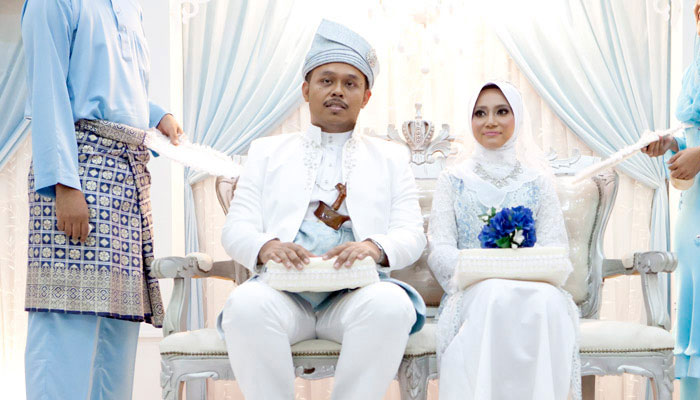

Marriages: One Name Different Versions
Muslim
Islam, the world’s second largest religion after Christianity, was founded by the Prophet Muhammad in the seventh century AD. It is still the leading faith in the Arab world, as well as in most of the Middle East. Islam is much more than a religion: it also supplies the guiding principles of political and social life.
Muslim marriages can be conducted in different ways, depending on the culture in which they are arranged. The following information refers, in the most part, to the Asian world. Here, Muslim marriages are generally arranged by the parents, with the bride and groom themselves having the final say about who they will wed. The actual proposal comes from the woman, who contacts the man through an intermediary -- normally a male relative.
Strictly speaking, Muslim women cannot marry outside their faith. Muslim men can, in principle, marry non-Muslims, as long as they are Christian or Jewish and their children are raised as Muslims. Alternatively, it is possible for a woman to convert to the Muslim faith by performing the Shadada, a simple ceremony in which the convert accepts Allah and Mohammed.
After accepting her offer of marriage, the groom must give the bride a Mahar (gift). Usually in the form of money or gold, it is intended as a dowry for her to use as she wishes. The engagement period lasts three months, and if the couple aren’t married by the end of this period, the engagement contract needs to be renewed. During this time, the bride can only be in the same room as her intended if her father or brother is present and she is covered.
What happens at a Muslim wedding?
In Islam, it is considered both a religious duty and a social necessity to get married. Thus there is a great emphasis on the religious and social dimensions of the ceremony, which usually lasts about one-and-a-half hours.
The ceremony is generally a well-attended affair, though to make it official, only two male witnesses are required. The wedding always retains a spirit of simplicity, in accordance with the tenets of Islam.
Planning your Muslim wedding
Setting the date
- The Muslim calendar works on a lunar cycle, so there are no fixed days for weddings. However, it is forbidden to marry on the two days of Eid, which occur after the feast of Ramadan, and the Day of Pilgrimage. It is also impossible to marry on the Day of Ashura, which falls on either the 9th or 10th day of the Islamic first month (Muharran).
- You can marry at any time of the day.
- There is no fixed notice period required before marriage, as, in Islam, there’s no registrar system.
Once you’ve settled on the ideal date and approximate time you’d like to marry, you need to speak to the Iman of the mosque, or your local cleric. Arrange the Mahar, the gift from husband to wife, which is an important part of the Nikah (wedding ceremony).
There is no marriage license in the Muslim wedding (though the witnesses need to sign a ‘proof of Nikah’, which testifies that the marriage has taken place and that the bride has given her full consent). Bride and groom will not be asked to fill in any forms, as this is done by the priest.
Any male Muslim who understands the traditions of Islam may perform the wedding ceremony, although many mosques have dedicated marriage officers. In most cases, however, the Qazi -- an elder of the mosque -- will officiate in the service, as he is the most knowledgeable in the community. No female Muslim may officiate in the service.
Booking your wedding venue
As a Muslim wedding can take place anywhere and not just in a Mosque (though this is the preferred choice), you have a lot of scope for your venue. Think about:
- How many people the venue will accommodate.
- Whether it’s possible to take tape recordings, videos and photos of the event
- Flowers and ornaments. These are not allowed in the mosque, but the bride and groom are decorated with flowers for the service. If you’re opting for a wedding in a hotel or venue other than the mosque, you have more freedom and can decorate with flower arrangements, streamers and banners. However, it is always advised to speak to the co-ordinator of your venue and community leaders about appropriate decorations.
Guests at Muslim weddings
People from all religious denominations can be invited to the wedding.
Muslim wedding wear
Traditionally, the Asian Muslim bride wears sparkling, bright clothes, with lots of jewellery and flowers. This is in contrast to the Arab Muslim bride, who traditionally wears a white dress and veil, like her Christian counterpart. Her hands and feet are decorated with henna tattoos (Mehndi).
The groom wears a simple outfit, either traditional or a western-style suit - or a combination of the two.
Guests should remember that revealing clothes are not appropriate.
On the big day
- The marriage ceremony itself is called the Nikah. The bride and groom are separated, either in different parts of the hall, or in different rooms. Guests are traditionally also separated by gender, although in Western cultures they may be mixed.
- The marriage party listens to a marriage sermon given by the Muslim officiating at the service. This serves to solemnise the marriage. There are no particular specifications so the marriage ceremony is very much up to the Qazi performing the ritual. Some recite the Fatihah (the first chapter of the Koran) and the blessing or durud.
- Traditionally, there is no service sheet, although, in recent years, texts have been supplied.
- The marriage documents (contract and certificate) are filed at the mosque and the local government. The ceremony ends with a prayer (Duoa) for the bride and groom, their families, and the Muslim community at large.
- You can throw confetti, but it is more traditional to shower the bride with coins, a ritual known as Savaqah.
- A marriage banquet, or Walima, follows the ceremony, served to the men and women separately. After the meal the couple are seated together for the first time, their heads covered by a dupatta and prayers are read.
After the main ceremony, the bride and groom return to the Grooms home and the ritual of Rukhsat is performed. The father of the bride will offer his daughters hand to her new husband, asking that he takes care of her. The mother of the groom may hold the holy Quran above the brides head as she enters the home for the first time as a married couple.